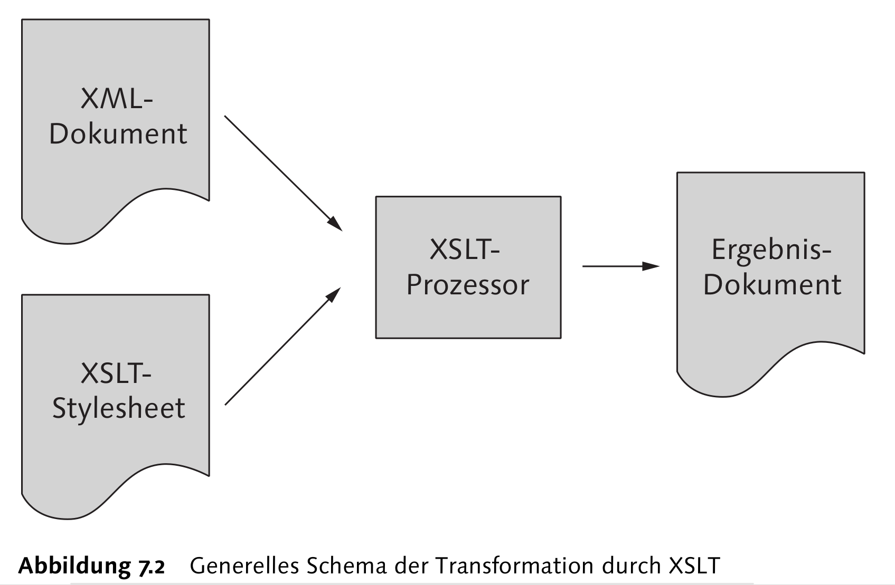
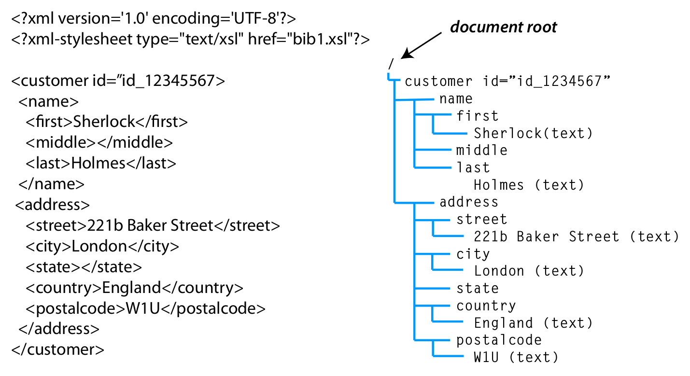
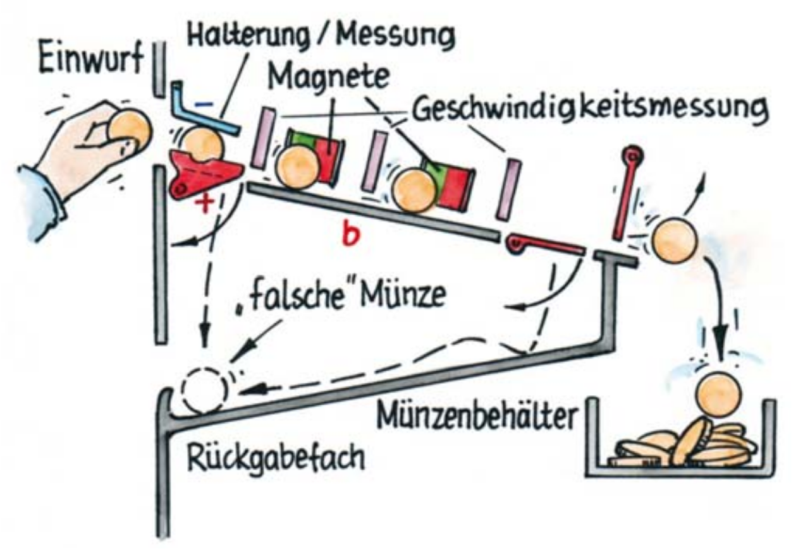
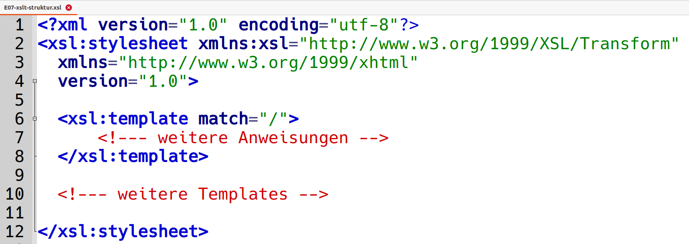
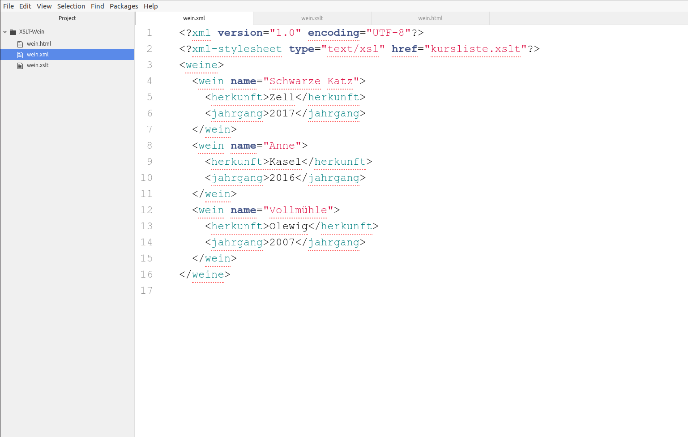
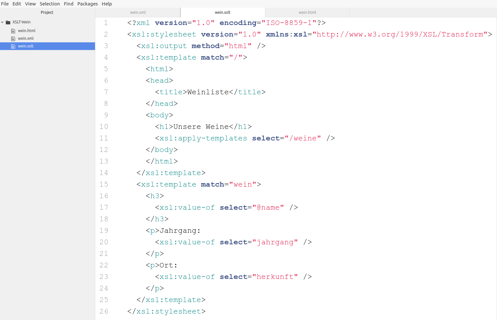
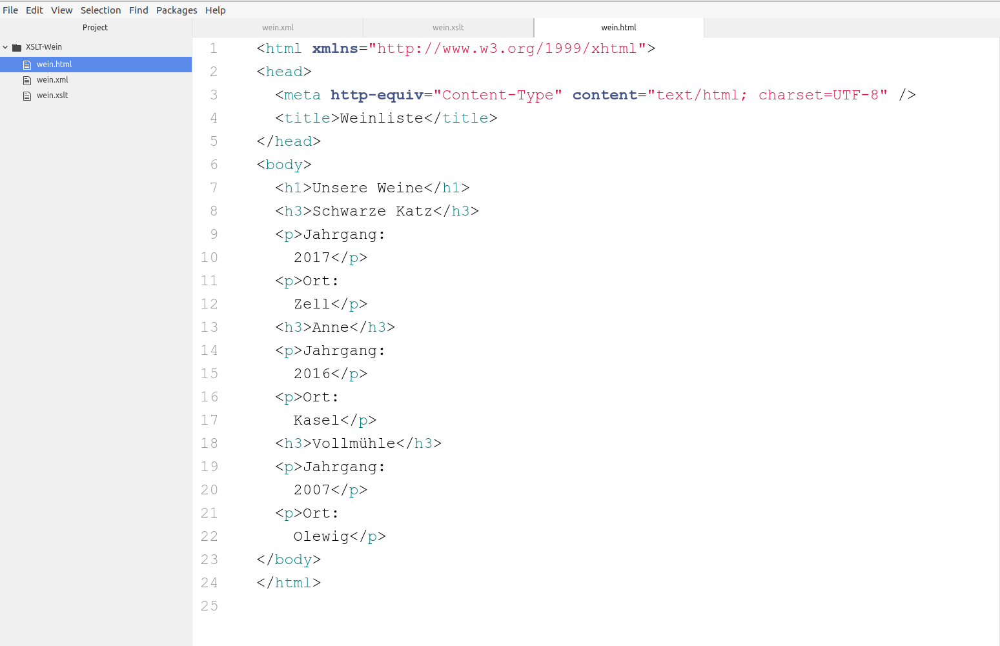
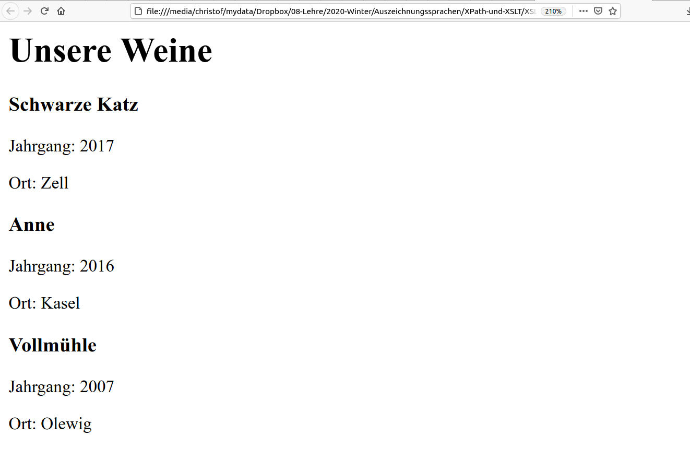

# Transformationen mit XSLT <br/> <hr/> <br/>Prof. Dr. Christof Schöch <br/> <br/> <hr/> <p><strong>Modul Auszeichnungssprachen<br/>MSc. Digital Humanities, Universität Trier</strong></p> <hr/> <img height="60" data-src="img/basics/uni-trier.png"> :: - Ziele dieser Sitzung: - Vermitteln, warum XSLT nützlich ist -- ## Überblick 1. Motivation: Wozu XSLT? 1. Ablauf der XSLT-Prozessierung 1. Bausteine eines XSLT-Stylsheets 1. Beispiel: Weinliste -- ## (1) Motivation: Wozu XSLT? --- ### Warum XSLT? * CSS kann nur "stylen", aber nicht umorganisieren, sortieren, etc. * Notwendig, wenn man XML-Dokumente nicht als Text, sondern als Daten sieht * W3C: “Use CSS when you can, use XSL when you must.” --- ### Was ist XSLT? * XSLT: eXtensible Stylesheet Language for Transformations <!-- .element: class="fragment" data-fragment-index="1" --> * Eine in XML geschriebene Sprache <!-- .element: class="fragment" data-fragment-index="2" --> * Steuert die Umwandlung eines XML-Dokuments in ein anderes Dokument <!-- .element: class="fragment" data-fragment-index="3" --> * Kann auf beliebiges, wohlgeformtes XML angewandt werden <!-- .element: class="fragment" data-fragment-index="4" --> * Primär beschreibende Sprache (Templates), die aber auch Anweisungen ausführen kann <!-- .element: class="fragment" data-fragment-index="5" --> * Nutzt XPath, um die Teile des Dokuments zu adressieren <!-- .element: class="fragment" data-fragment-index="6" --> -- ## (2) Ablauf der XSLT-Prozessierung --- ### XSLT-Processing (1)  <small>(Quelle: Vonhoegen, <em>Einstieg in XML</em> (2007), Kapitel 7: "Umwandlung mit XSLT".)</small> --- ### Was passiert da genau? 1. XML Parser liest XML, konstruiert XML-Baum <!-- .element: class="fragment" data-fragment-index="1" --> 1. XML Parser liest das XSLT Stylesheet, konstruiert XML-Baum <!-- .element: class="fragment" data-fragment-index="2" --> 1. Beide XML-Bäume werden an den XSLT Processor geschickt <!-- .element: class="fragment" data-fragment-index="3" --> 1. XSLT Prozessor arbeitet beide Dokumente ab: <!-- .element: class="fragment" data-fragment-index="4" --> 1. Er geht in Dokumentreihenfolge durch den XML-Baum; <!-- .element: class="fragment" data-fragment-index="5" --> 1. Prüft für jeden Knoten, ob eine Regel im XSLT-Baum passt; <!-- .element: class="fragment" data-fragment-index="6" --> 1. Wenn ja, wird die Regel angewandt; sonst wird weiter geprüft. <!-- .element: class="fragment" data-fragment-index="7" --> 1. Dabei baut der XSLT-Processor einen neuen Baum für den Output <!-- .element: class="fragment" data-fragment-index="8" --> 1. Ein XSLT "Serializer" transformiert den Baum in das gewünschte Format (HTML, SVG, XML, etc.) <!-- .element: class="fragment" data-fragment-index="9" --> 1. Das neue Dokument wird abgespeichert oder im Browser angezeigt <!-- .element: class="fragment" data-fragment-index="10" --> --- ### XSLT-Processing (2) <img height="480" data-src="img/E07/xslt-processing2.png"> <small>(Quelle: Vonhoegen, <em>Einstieg in XML</em> (2007), Kapitel 7: "Umwandlung mit XSLT".)</small> --- ### XML-Baum und Dokumentreihenfolge  <small>(Quelle: Kelly, <em>XSLT Jumpstarter</em> (2015), Chapter 1: "Introducing XSLT".)</small> --- ### XSLT-Prozessor als "Münzprüfer"  <small>(Martin Apolin, "Die Arbeitsweise der Physik", 2010, www.oebv.at.)</small> -- ## (3) Bausteine eines XSLT-Stylesheets --- ### Grundgerüst  * XML Declaration * Stylesheet Declaration * Eines oder mehrere Templates --- ### Das `<xsl:template>`-Tag * Grundlegender Baustein * Beinhaltet mehrere Dinge * das `match`-Attribut bestimmt, ob/wann das Template eingesetzt wird * Weitere Prozesse können ausgelöst werden: Variablen, Berechnungen, etc. * auch "literale" Inhalte können vorkommen (bspw. HTML-Tags) * Instruktionen, weitere Templates aufzurufen (`xsl:apply-templates`) --- ### Das `match=""`-Attribut * Befindet sich innerhalb des `xsl:template` Tags * Evaluiert den Wert relativ zum aktuellen Kontextknoten * Gefunden werden können: * Attribute des Kontextknotens * Text-Knoten des Kontextknotens * Direkte Kind-Knoten des Kontextknotens * Mehr Flexibilität durch: * Einsatz von XPath als Wert von `match` * Nicht an die Dokumentreihenfolge und den aktuellen Kontext gebunden --- ### Das `<xsl:apply-templates>`-Tag * Fordert den Prozessor auf: * weiter im XML-Dokument Knoten aufzurufen * und nach passenden XSLT-Templates zu suchen * `select`-Attribut * zur Fokussierung dieses Prozesses * funktioniert wie ein Filter * Wert kann ein Knoten-Namen oder ein XPath sein * `mode`-Attribut * verbindet `xsl:template`-Tags mit `xsl:apply-templates`-Tags * so kann ein XML-Knoten mehrfach aktiviert werden * bspw. Überschriften im Text und im Inhaltsverzeichnis * aktiviert außerdem die "built-in templates" von XSLT --- ### Das `<xsl:for-each>`-Tag * Der zentrale Mechanismus für Schleifen in XSLT * Genauer: keine Schleife (mit Zähler), sondern eine Iteration * Der XPath auf dem `select`-Attribut bestimmt den Anwendungsbereich * Auf jedem der Treffer-Knoten werden dann Anweisungen ausgeführt --- ### Das `xsl:value-of`-Tag * dient der Datenübername aus dem XML-Dokument * `select`-Attribut * bestimmt, was genau übernommen werden soll * XPath: Elemente, Attribute, Werte, Textinhalte -- ## Beispiel: Weinliste --- ### XML-Dokument (Atom)  --- ### XSLT-Stylesheet (Atom)  * Transformation: mit Plugin "XSLTransform" * Strg+P, "XSLT", Dateiauswahl, Enter --- ### HTML-Output (Atom)  --- ### HTML-Output (Browser)  -- ## Abschluss --- #### Lektürehinweise Grundlagen / Referenz * David James Kelly: "Chapter 1: Introducing XSLT" und "Chapter 2: XSLT in Action", in: *XSLT Jumpstarter*. Raleigh, NC: Peloria Press, 2015, S. 1-29. Weitere Empfehlungen zur Vertiefung * Helmut Vonhoegen: "Umwandlungen mit XSLT", in: *Einstieg in XML: Grundlagen, Praxis, Referenzen*. 4. Auflage. Bonn: Galileo Press, 2007, S. 241-327. * Michael Kay: *XSLT 2.0 and XPath 2.0 Programmer's Reference*. 4th Edition. Indianapolis IN: Wiley, 2008. (1316 Seiten!) --- ## Danke! <br/><br/> <br/><br/> <br/><br/> <hr/> <small> <br/>Lizenz: <a href="https://creativecommons.org/licenses/by/4.0/">Creative Commons Attribution (CC BY)</a>, 2020. </small> <hr/>